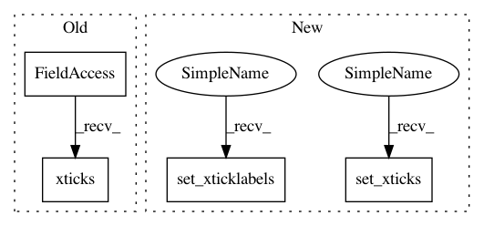

07aa92b15195381e9c3ee07f62ba7602caa5a46f,examples/text_labels_and_annotations/multiline.py,,,#,10
Before Change
va="baseline", ha="right", multialignment="left",
bbox=dict(fc="none"))
plt.xticks([0.2, 0.4, 0.6, 0.8, 1.],
["Jan\n2009", "Feb\n2009", "Mar\n2009", "Apr\n2009", "May\n2009"])
plt.axhline(0.4)
plt.title("test line spacing for multiline text")
After Change
va="baseline", ha="right", multialignment="left",
bbox=dict(fc="none"))
ax1.set_xticks([0.2, 0.4, 0.6, 0.8, 1.])
ax1.set_xticklabels(["Jan\n2009", "Feb\n2009", "Mar\n2009", "Apr\n2009",
"May\n2009"])
ax1.axhline(0.4)
ax1.set_title("test line spacing for multiline text")
In pattern: SUPERPATTERN
Frequency: 3
Non-data size: 4
Instances
Project Name: matplotlib/matplotlib
Commit Name: 07aa92b15195381e9c3ee07f62ba7602caa5a46f
Time: 2021-01-25
Author: ianthomas23@gmail.com
File Name: examples/text_labels_and_annotations/multiline.py
Class Name:
Method Name:
Project Name: Pinafore/qb
Commit Name: a37910cf0c8fbd1f863c058912571902198cad44
Time: 2017-05-23
Author: ski.rodriguez@gmail.com
File Name: qanta/reporting/plotting.py
Class Name:
Method Name: plot_confusion
Project Name: theislab/scanpy
Commit Name: 8c00b4b5ee453e31a8bc70f36d50607cccb0902f
Time: 2017-07-31
Author: f.alex.wolf@gmx.de
File Name: scanpy/plotting/tools.py
Class Name:
Method Name: aga_path